Как я сократил сценарий записи к врачу в 2 раза
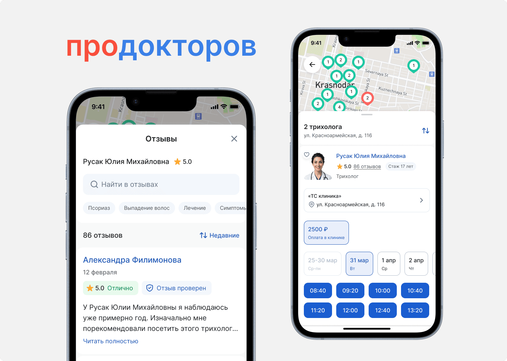
images/prodoctorov/hero.png
Контекст
ПроДокторов (22M+ MAU) — один из ключевых продуктов компании МедРокет и крупнейший в России медицинский портал для поиска врачей и клиник на основе реальных отзывов пациентов.
Так как я сам регулярно пользовался этим сервисом и неоднократно сталкивался с трудностями при поиске врача на карте, я решил самостоятельно исследовать мобильную версию продукта и проверить, насколько далеко смогу продвинуться без постановки задачи со стороны продакта/дизайн-лида. Мне хотелось разобраться, какие именно проблемы возникают в этом сценарии и почему мне, как пользователю, приходится тратить больше времени на поиск подходящего врача на карте.
Анализ текущего решения
Я проанализировал весь сценарий поиска врача на карте, чтобы выявить повторяющиеся UX-проблемы и нарушения эвристик. Ниже показаны фрагменты анализа ключевых экранов.
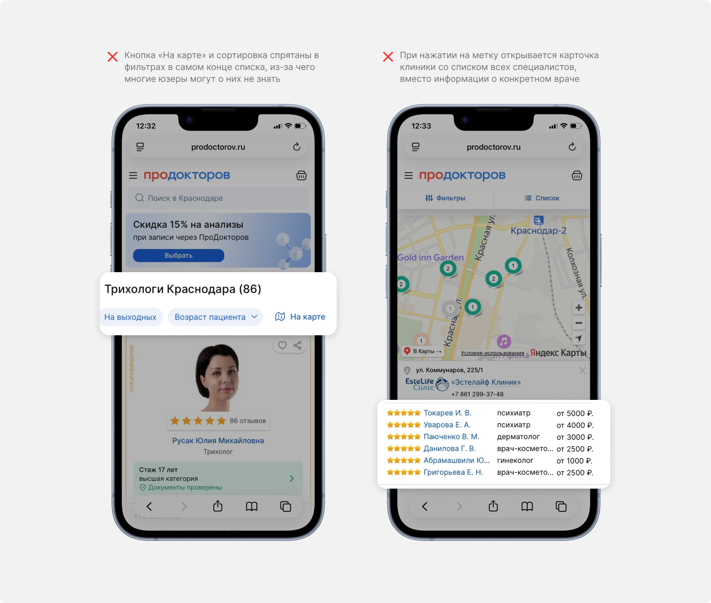
images/prodoctorov/as-is.png
Гипотезы проблем
На основе анализа я сформулировал 7 гипотез проблем, которые требовали дальнейшей проверки на пользователях.
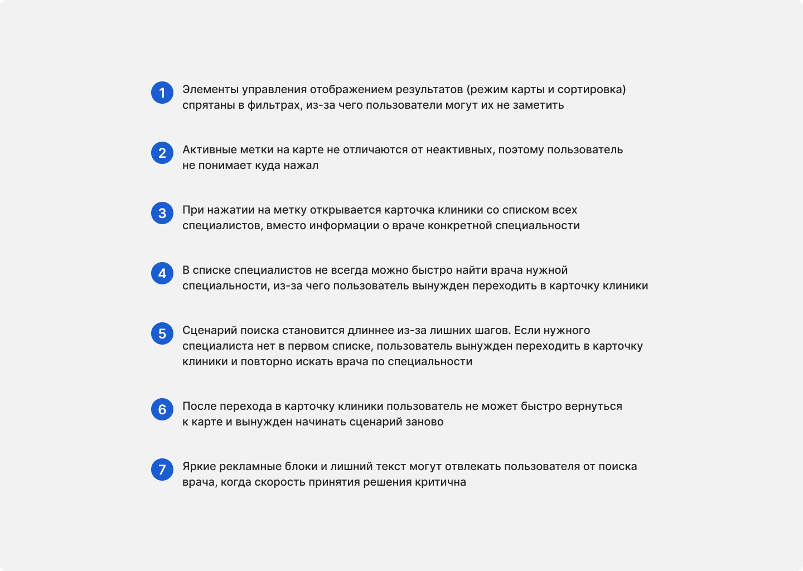
images/prodoctorov/problem-hypotheses.png
UX-тестирование и валидация гипотез
Чтобы проверить сформулированные гипотезы я провёл несколько быстрых сессий по методу think-aloud: участники выполняли задание и вслух проговаривали свои действия и мысли.
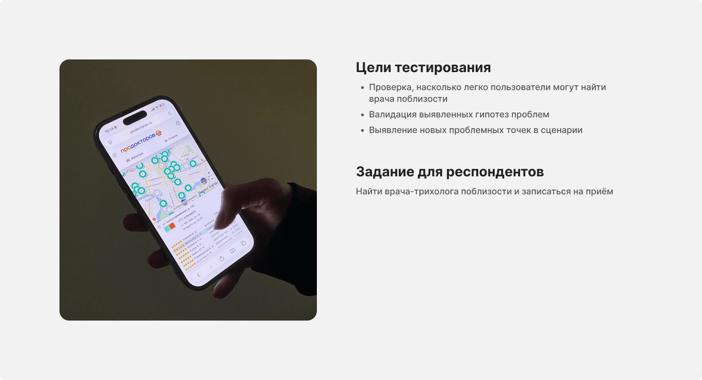
images/prodoctorov/test-goals.png
Результаты тестов я собрал в таблицу, где критериями стали мои изначальные гипотезы. Большинство из них подтвердилось и указало на повторяющиеся проблемы сценария.
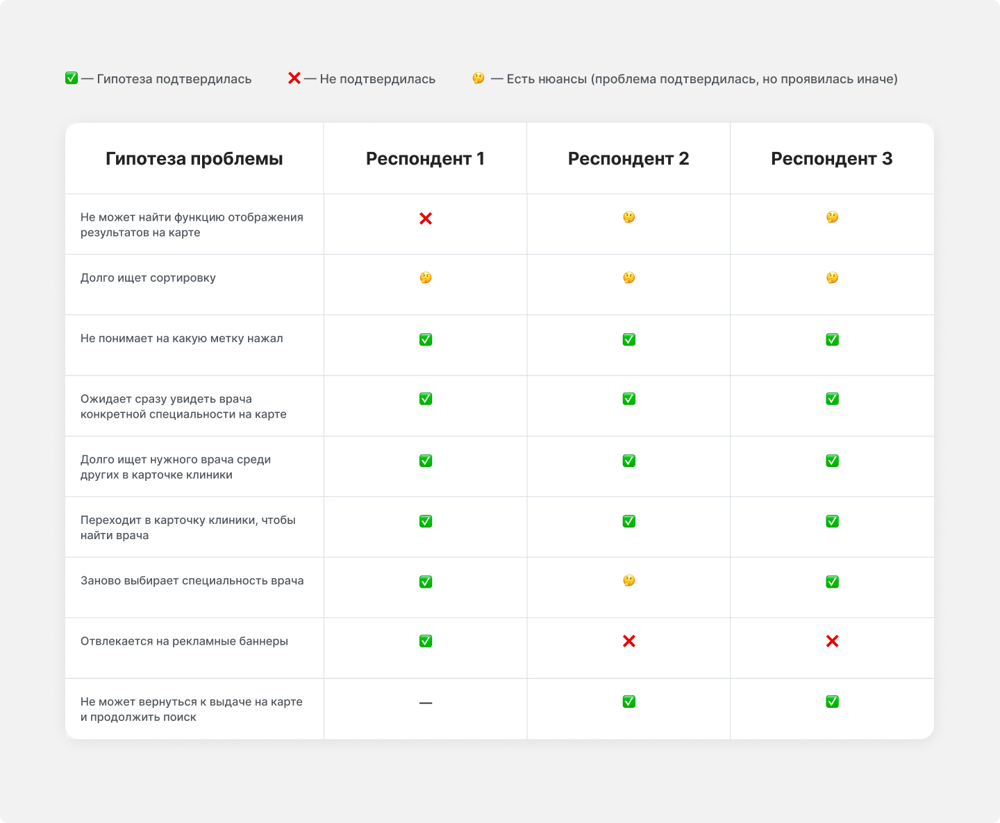
images/prodoctorov/test-results.png
Что показало тестирование
В среднем пользователям требовалось ~2 мин., чтобы записаться к врачу через карту.
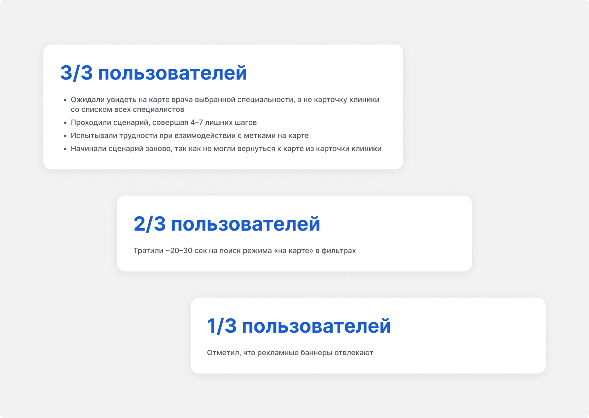
images/prodoctorov/test-conclusions.png
Инсайт от респондента № 2
«Когда я нажимаю на метки на карте, они остаются одинаковыми, и я начинаю путаться, потому что не понимаю, на какие уже нажимала. Было бы удобнее, если бы просмотренные точки как-то меняли цвет, как в поиске квартир на Авито».
Проблема и постановка задачи
Проблема
Пользователи не могут быстро найти и выбрать врача поблизости, потому что сценарий поиска через карту ориентирован на выбор клиники, а не конкретного специалиста. Из-за этого пользователи теряют контекст и совершают лишние шаги для достижения цели.
Задача
Оптимизировать сценарий поиска врача на карте, чтобы пользователь мог быстро выбрать специалиста и записаться на приём без потери контекста.
Почему это важно пользователю
- Тратит много времени и попыток на поиск врача
- Испытывает фрустрацию при необходимости начинать сценарий повторно
- Теряет доверие к сервису
Почему это важно бизнесу
- Снижается конверсия в запись на приём
- Пользователи не используют карту как быстрый способ записи
- Повышается риск ухода к конкурентам с более простым сценарием
Когда это важно (JTBD)
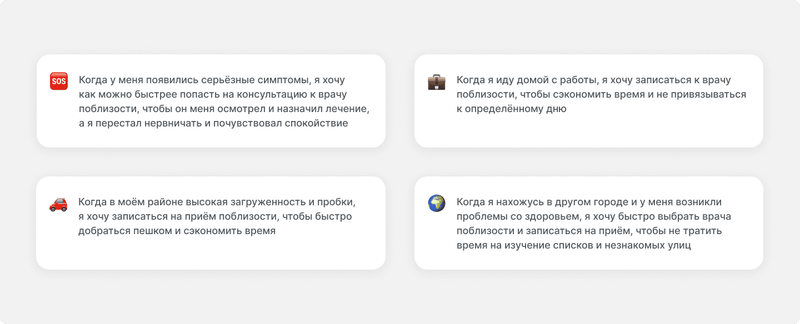
images/prodoctorov/jtbd.png
Критерии успеха
- Увеличение общей конверсии в запись на приём
- Рост количества записей через карту
- Сокращение среднего времени поиска врача
- Сокращение количества шагов для записи к врачу
Анализ конкурентов
После определения ключевой проблемы я проанализировал, как другие сервисы реализуют сценарий поиска врача на карте и какие решения используют.
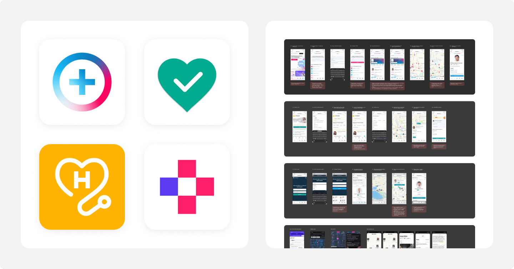
images/prodoctorov/competitors-1.png
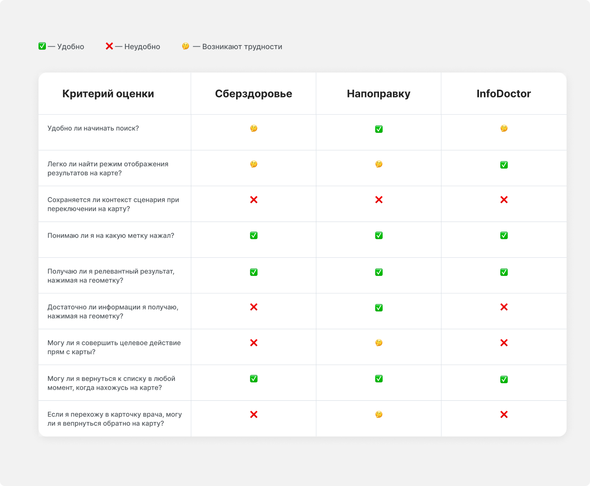
images/prodoctorov/competitors-2.png
Инсайт из анализа косвенных конкурентов
В сервисах из смежных доменов (Яндекс.Еда, 2гис) просмотр отзывов и другой доп. информации реализован без перехода на новый экран — через шторки или табы, что позволяет сохранять контекст и не прерывать сценарий.
Выводы
На основе результатов анализа я выделил 4 принципа для улучшения сценария:
- Использование паттернов, не требующих перехода между экранами, поможет сохранить бесшовность сценария при просмотре отзывов врача
- При выборе метки важно видеть карточку конкретного врача, а не всей клиники
- Активные метки должны менять состояние, помогая ориентироваться на карте
- Должна быть возможность вернуться к предыдущему шагу на любом этапе
Гипотезы решений
Следующим шагом я сформулировал гипотезы решений. Чтобы определить фокус работы, я разделил их на две группы и расставил приоритеты.
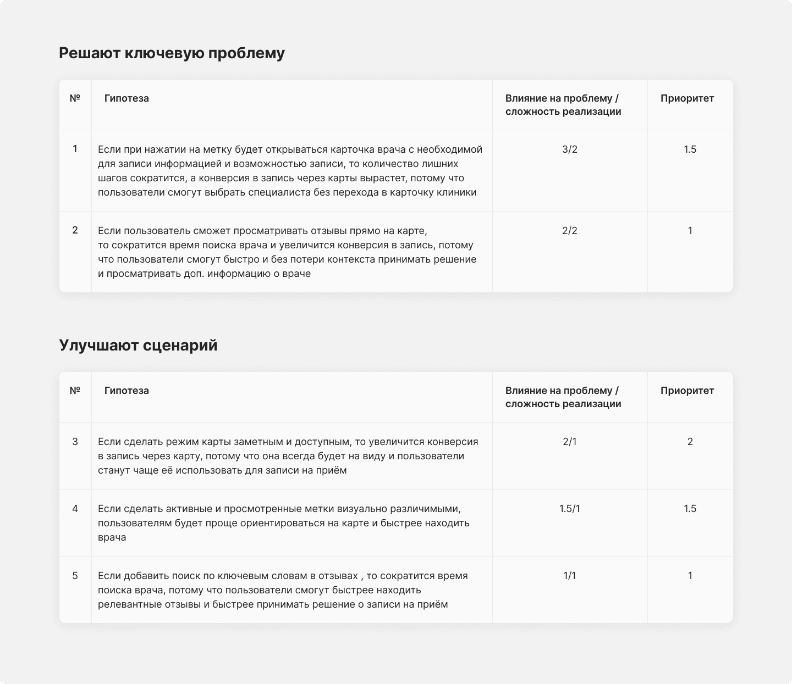
images/prodoctorov/hypotheses.png
Проектирование
В первую очередь я сфокусировался на устранении ключевой проблемы сценария — лишних шагов при выборе врача на карте.
Решение № 1
Гипотеза: Если при нажатии на метку будет открываться карточка врача с необходимой для записи информацией и возможностью записи, то количество лишних шагов сократится, а конверсия в запись через карты вырастет, потому что пользователи смогут выбрать специалиста без перехода в карточку клиники.
Я проанализировал текущую карточку врача в выдаче Продокторов, выделил необходимую для записи информацию, и на её основе спроектировал первую версию.
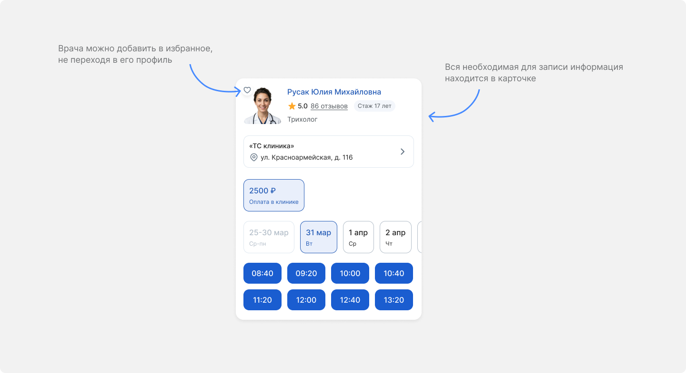
images/prodoctorov/solution-1.png
Во время проектирования я столкнулся с ограничением: в одной клинике может работать несколько врачей одной специальности. Чтобы понять, как эту задачу решают другие сервисы, я вернулся к анализу конкурентов. Подходы прямых конкурентов оказались не самыми удобными, поэтому я адаптировал паттерн из сервиса Домклик.
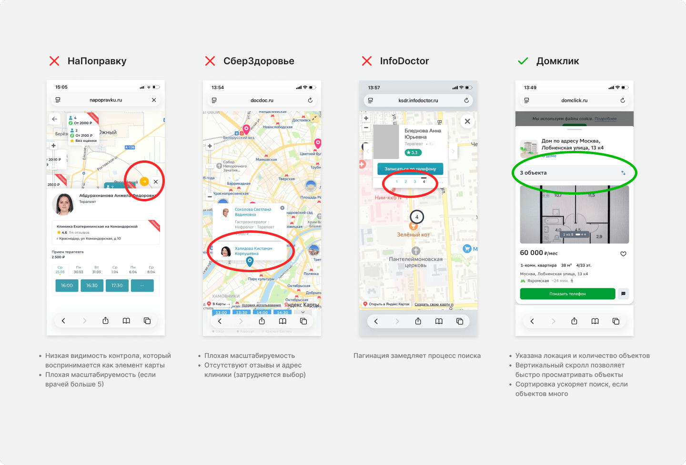
images/prodoctorov/solution-1-1.png
Далее я доработал первую версию карточки и получил финальный результат
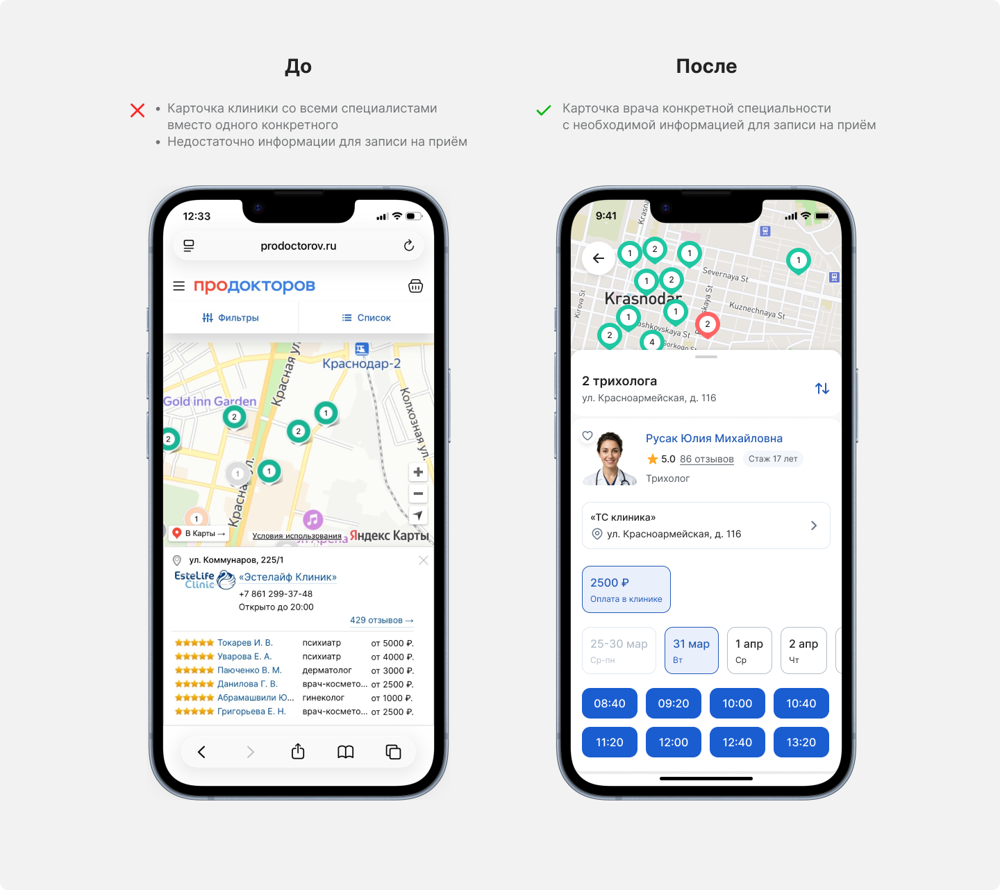
images/prodoctorov/solution-1-2.png
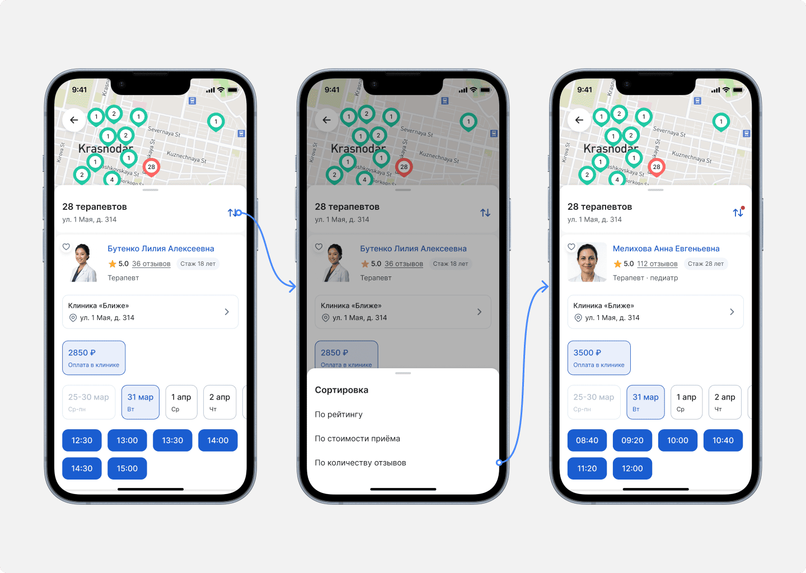
images/prodoctorov/solution-1-3.png
Ценность для пользователя
- Теперь вместо карточки клиники со списком всех специалистов появляется релевантная карточка конкретного врача. Пользователю не надо переходить в карточку клиники и продолжать поиск там
- Карточка содержит достаточно информации для сравнения специалистов на карте
- Даже при большом количестве врачей в одной локации навигация остаётся удобной благодаря сортировке
- Врачей можно сохранять в избранное, не покидая сценарий
Решение № 2
Гипотеза: Если пользователь сможет просматривать отзывы прямо на карте, то сократится время поиска врача и увеличится конверсия в запись, потому что пользователи смогут быстро и без потери контекста принимать решение и просматривать доп. информацию о враче.
Я проанализировал текущий экран отзывов на сайте и определил, какие элементы НЕ важны в сценарии быстрого выбора врача.
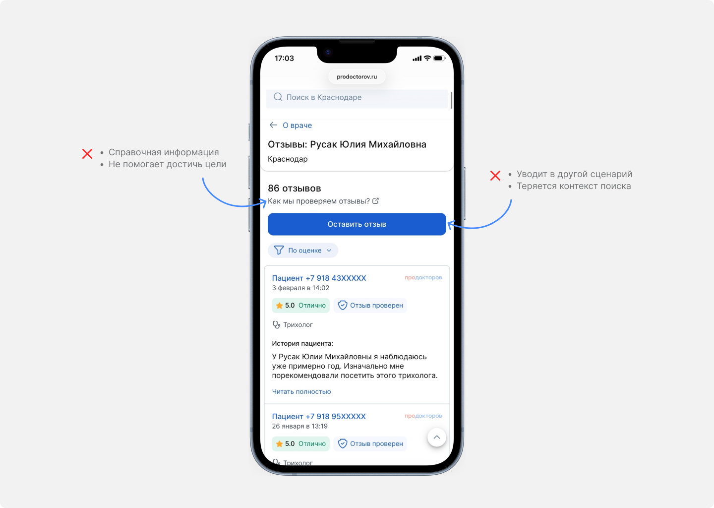
images/prodoctorov/solution-2.png
Для сохранения контекста сценария я разместил отзывы в шторке поверх карты. После просмотра пользователь может сразу вернуться к карточке врача без дополнительных переходов.
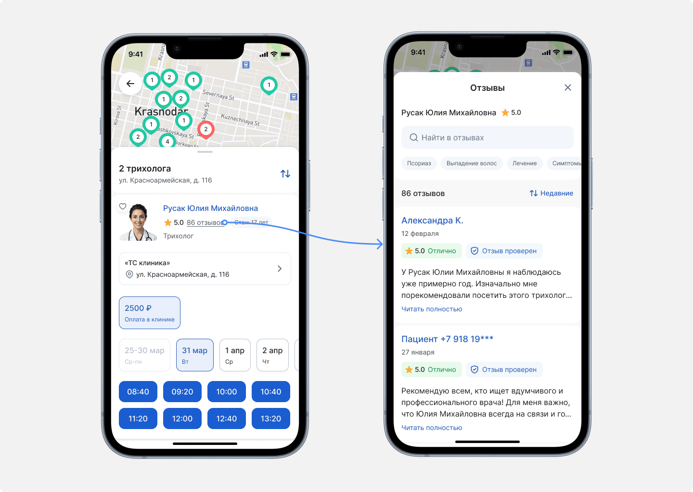
images/prodoctorov/solution-2-1.png
Ценность для пользователя
- Пользователь может просматривать отзывы, не покидая карту
- Процесс выбора и сравнения врачей теперь происходит в рамках одного экрана.
Решение № 3
Гипотеза: Если сделать режим карты заметным и доступным, то увеличится конверсия в запись через карту, потому что она всегда будет на виду и пользователи станут чаще её использовать для записи на приём.
Я рассмотрел 2 варианта расположения элементов управления, чтобы сделать режим карты заметнее и обеспечить быстрый доступ к сортировке без открытия фильтров. В итоге был выбран вариант № 2.
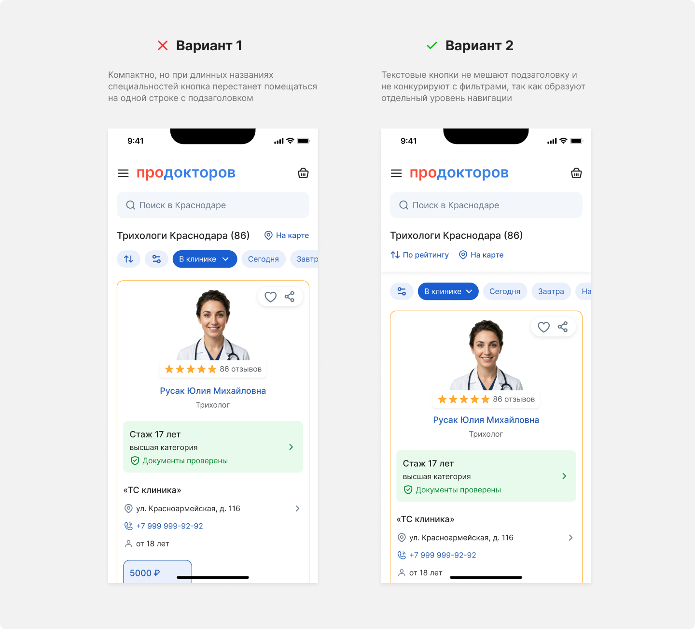
images/prodoctorov/solution-3.png
Ценность для пользователя
- Режим «На карте» находится в отдельной панели и всегда остаётся заметным
- Сортировка стала доступна без открытия фильтров
Решение № 4
Гипотеза: Если сделать активные и просмотренные метки визуально различимыми, пользователям будет проще ориентироваться на карте и быстрее находить врача.
Сначала я проанализировал, как в текущей версии работают состояния меток.
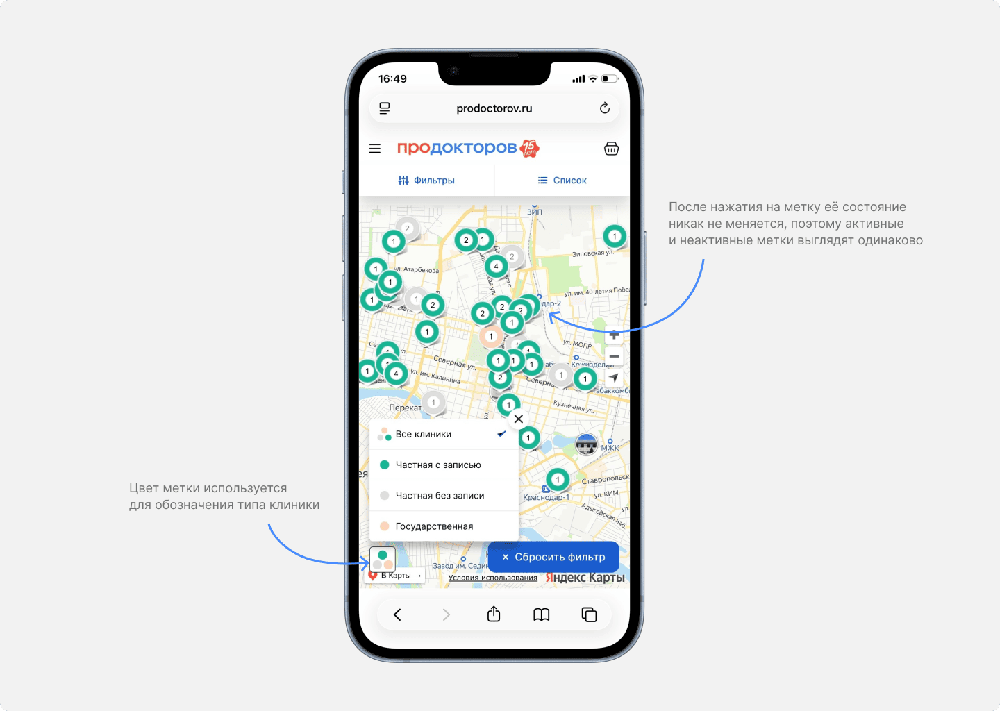
images/prodoctorov/solution-4.png
Я отказался от цветового кодирования по типу клиники и ввёл отдельные состояния для активных и просмотренных меток.
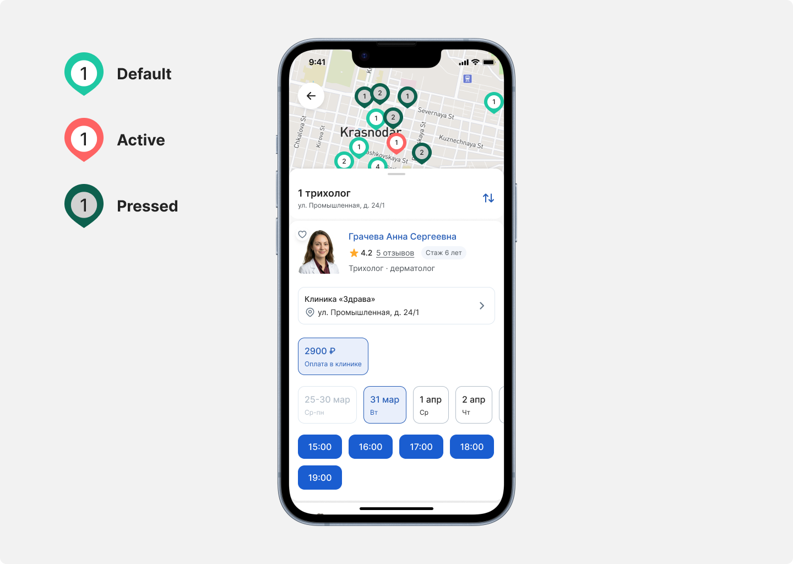
images/prodoctorov/solution-4-1.png
Затем перенёс параметр «Тип клиники» в фильтры и упростил навигацию по карте.
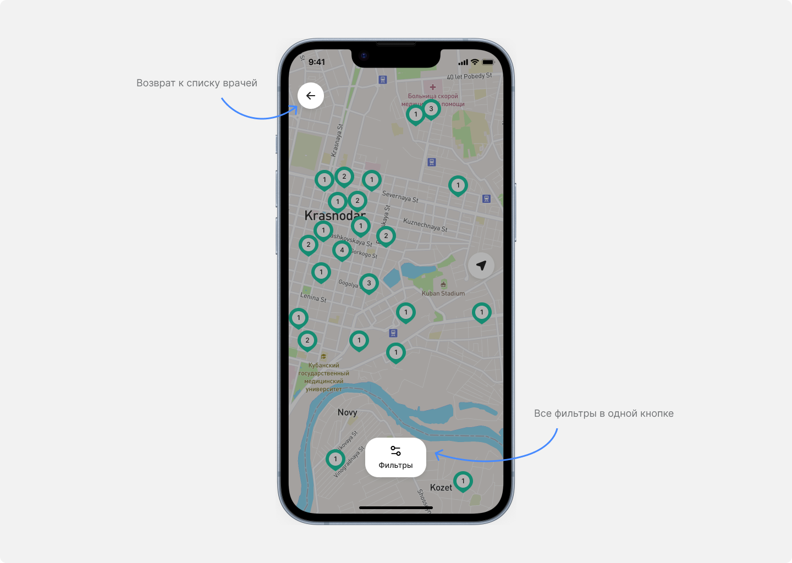
images/prodoctorov/solution-4-2.png
Я пересобрал набор фильтров и оставил только те, которые помогают быстро выбрать врача конкретно в этом сценарии. Теперь фильтры открываются в шторке, где настройки можно быстро менять с помощью чипсов. Такой формат позволяет легко взаимодействовать с фильтрами в движении.
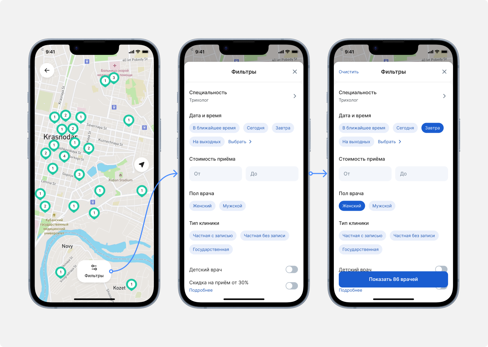
images/prodoctorov/solution-4-3.png
Ценность для пользователя
- Пользователи видят, какие метки уже просмотрены, и не возвращаются к ним
- Активная метка всегда выделена, поэтому ориентироваться на карте проще
- Тип клиники выбирается через фильтр, а все настройки находятся в одном месте
Решение № 5
Гипотеза: Если добавить поиск по ключевым словам в отзывах, то сократится время поиска врача, потому что пользователи смогут быстрее находить релевантные отзывы и быстрее принимать решение о записи на приём. Пользователь может искать отзывы по ключевым словам.
Найденные совпадения подсвечиваются, чтобы нужную информацию было проще сканировать.
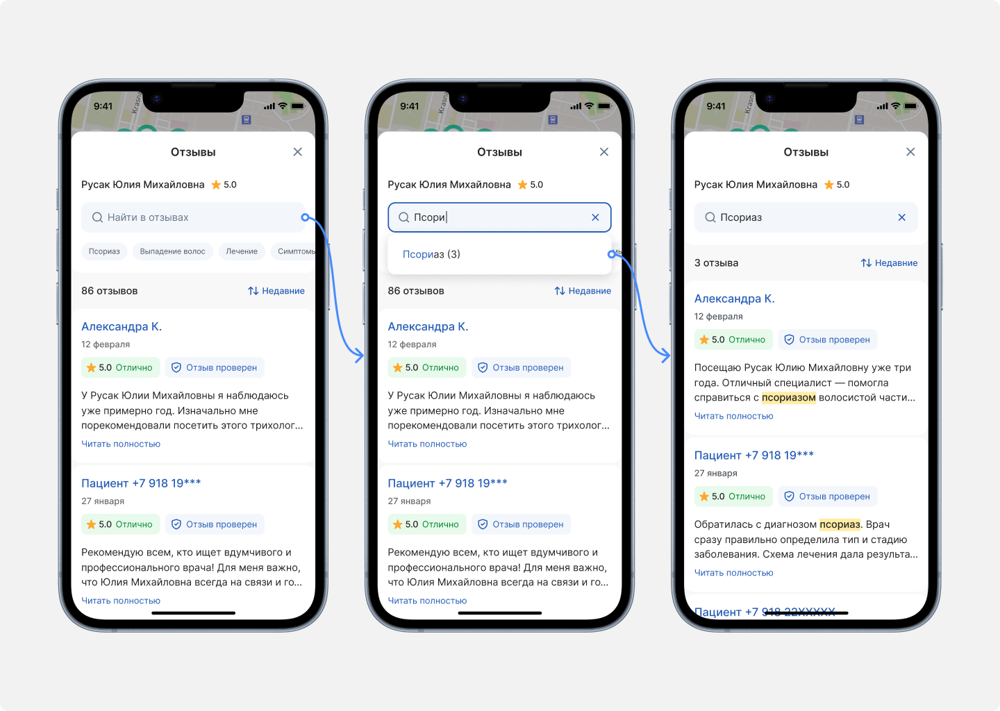
images/prodoctorov/solution-5.png
Если ключевое слово находится в середине или в конце длинного отзыва, в свёрнутом состоянии показывается только фрагмент вокруг него. При необходимости отзыв можно раскрыть полностью.
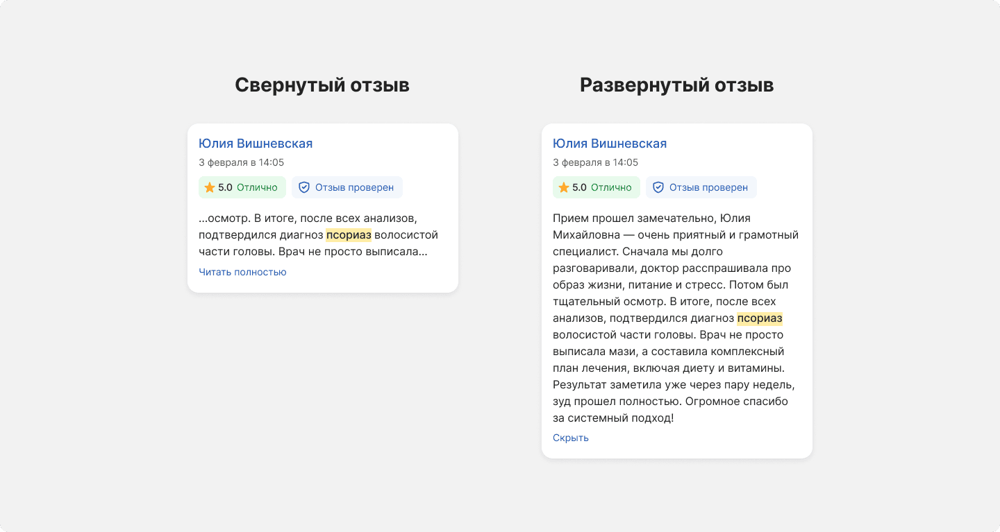
images/prodoctorov/solution-5-1.png
Ценность для пользователя
- Пользователи могут быстрее находить отзывы по ключевым словам (конкретным симптомам, болезням и т.д.)
- Подсветка совпадений помогает быстрее сканировать длинные отзывы
Финальный флоу и UX-тестирование
Теперь, находясь в режиме карты, пользователь может в 2 клика выбрать врача и записаться на приём, не переходя в карточку клиники.
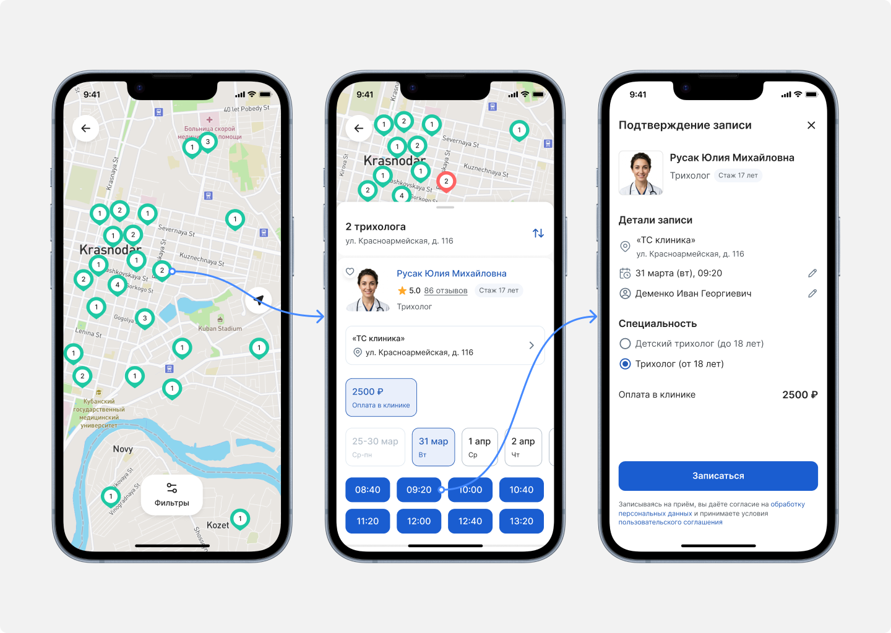
images/prodoctorov/final-flow.png
Количество шагов сократилось с 11 до 6.
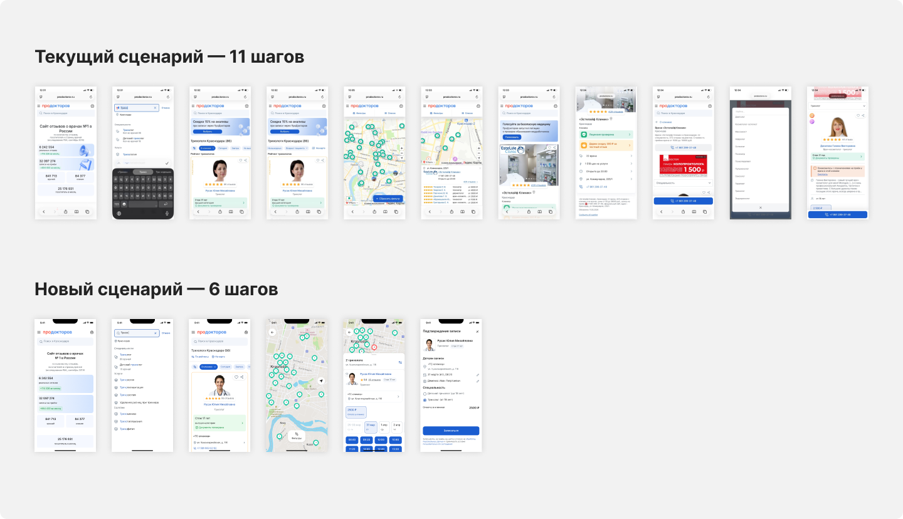
images/prodoctorov/steps-before-after.png
Чтобы проверить эффективность изменений, я провёл быстрые UX-тесты обновлённого сценария на трёх новых респондентах.
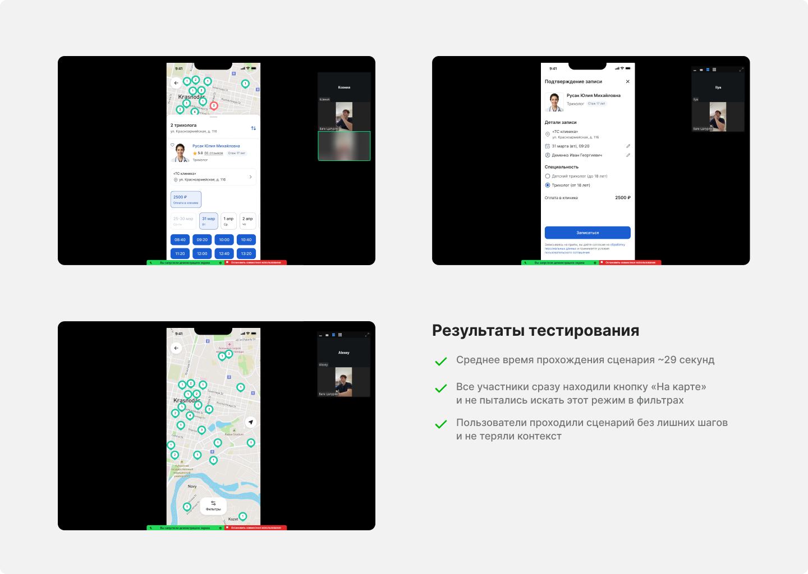
images/prodoctorov/final-test-results.png
Итоги работы
Что удалось реализовать
В рамках проекта я переработал сценарий поиска врача поблизости на карте, чтобы сделать его более быстрым и бесшовным. Предложенные решения позволяют пользователю сразу взаимодействовать с карточкой врача на карте и записываться на приём без перехода в карточку клиники.
- Среднее время прохождения сценария — ~29 сек. (вместо 1 мин. 59 сек.)
- Количество шагов для достижения цели — 6 шагов (вместо 11)
Ожидаемый эффект для бизнеса
- Рост конверсии в запись на приём за счёт сокращения количества шагов и упрощения сценария
- Увеличение количества записей через карту благодаря более заметному режиму отображения и улучшенной навигации по карте
- Усиление конкурентного преимущества за счёт объединения просмотра отзывов и записи к врачу в рамках одного сценария
Рефлексия и дальнейшее развитие
Во время работы над проектом я также заметил, что похожие проблемы при поиске через карту возникают в приложении Медточка (личный кабинет пациента) и при поиске услуг и анализов на Продокторов.
Поэтому следующим шагом я бы привёл эти сценарии к единой и консистентной структуре, чтобы поиск поблизости работал одинаково независимо от того, что ищет пользователь: врача, клинику или медицинскую услугу. Это позволило бы сделать интерфейс более предсказуемым и снизить когнитивную нагрузку при использовании продукта.
Другие проекты

images/cover-tbank.png
Организация совместных поездок в Т-банке
С помощью Claude спроектировал и протестировал функционал совместных поездок, который объединяет планирование, сбор средств и контроль общих расходов внутри приложения на протяжении всей поездки. В сценарий также интегрированы существующие возможности и сервисы экосистемы Т-Банка.

images/cover-crm.png
Как я упростил CRM для менеджеров (B2B)
Новый дизайн помогает менеджеру быстро находить ключевые показатели и фиксировать взаимодействия, напрямую влияя на бизнес-метрики через сокращение среднего времени проработки клиента